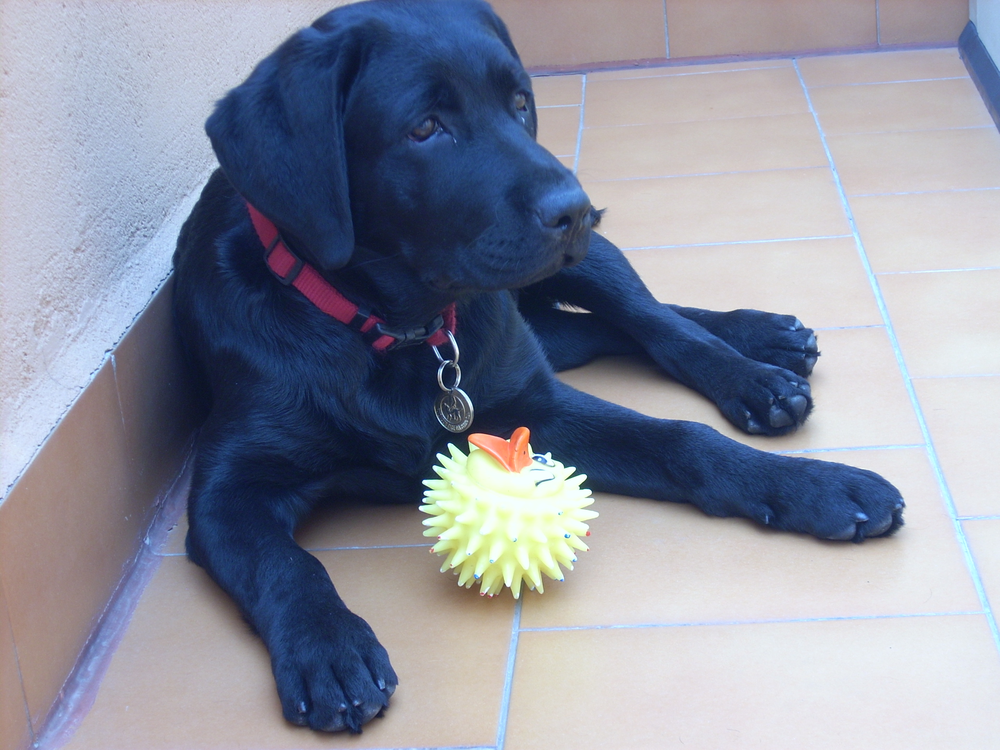

Olma
Era la cachorra mafiosa. Hacía trastadas cuando sabía que nadie la observaba.
Era la cachorra mafiosa. Hacía trastadas cuando sabía que nadie la observaba.
Perra noble, cariñosa y un poco tontorrona. Fue la primera, y la que más tiempo estuvo con nosotras.

Estuvo apenas dos meses en casa y revolucionó el vecindario. Chiquitaja y muy trasto.
No puedo ocultar que es mi favorita. Lista y con mucho carácter. Ahora vive en Tenerife con Marita.
Venían a cenar, al cine, de paseo, de compras... A todas partes, incluso a la playa y a esquiar. Eran uno más de la familia, viajaban con nosotras en coche, tren o avión. Y por supuesto, también se echaban la siesta en el sofá.